Verkmästare vid Bolidens Gruvaktiebolag Birger Algot Forsell
Patent- hydrallinevågen i gruvor och kvicksilverbrytare. Blev 77 år.
| Född: | 1909-07-30 Holmfors 2, Skellefteå lfs, Skellefteå sn. [1] | |
|---|
| Död: | 1986-10-08 Bjurliden 1:522, Torget 2, Boliden, Bolidens fs, Skellefteå kn. [2] | Umeå Universitetssjukhus. Dödsorsak: Cancer. |
|---|
| Vigsel: | 1937-02-07 Boliden, Skellefteå lfs, Skellefteå sn. [3] | Vigsel i Sollentuna fs, Stockholm. Birger Algot Forsell, arb. och Birgit Signhild Brudell, arbd., båda från Boliden. Vigselförrättare: Kde E. Höglund i Sollentuna fs, Stockholm. Attest från vigselförrättaren 1937-02-09. |
|---|
| Levde: | 1970 Bjurliden 1:522, Torget 2, Boliden, Bolidens fs, Skellefteå kn. [4] | |
|---|
| Levde: | 1980 Bjurliden 1:522, Torget 2, Boliden, Bolidens fs, Skellefteå kn. [5] | |
|---|
| Barn: |
|---|
| Kurt Arne Forsell (1942 - ) |
| Gerda Ulla-Stina Forsell (1949 - ) |
Personhistoria
| Årtal | Ålder | Händelse |
|---|
| 1909 |
|
Födelse 1909-07-30 Holmfors 2, Skellefteå lfs, Skellefteå sn [1] |
| 1911 |
1 år |
Systern Sanna Ingrid Alida Forsell föds 1911-02-12 Holmfors 2, Skellefteå sn [6] |
| 1912 |
2 år |
Brodern Ivar Eugén Forsell föds 1912-03-24 Holmfors 2, Skellefteå sn [7] |
| 1914 |
4 år |
Brodern Torsten Gustaf Forsell föds 1914-05-09 Holmfors 2, Skellefteå sn [8] |
| 1915 |
6 år |
Makan Gerda Birgit Signhild Brudell föds 1915-12-16 Kamlunge, Töre fs, Kalix sn [9] |
| 1916 |
6 år |
Systern Magda Kerstin Andréa Forsell föds 1916-07-12 Holmfors 2, Skellefteå sn [10] |
| 1918 |
8 år |
Systern Gunborg Anna Mari Forsell Vidman föds 1918-01-09 Holmfors 2, Skellefteå lfs, Skellefteå sn [11] |
| 1919 |
10 år |
Brodern Daniel Lennart Forsell föds 1919-10-28 Holmfors 2, Skellefteå sn [12] |
| 1923 |
13 år |
Brodern Amos Valdemar Forsell dör 1923-03-07 Holmfors 2, Skellefteå sn [13] |
| 1924 |
14 år |
Systern Margit Inga Greta Forsell föds 1924-07-26 Holmfors 2, Skellefteå sn [14] |
| 1928 |
19 år |
Brodern Harry Amos Forsell föds 1928-07-31 Skellefteå sfs, Skellefteå sn [5] |
| 1937 |
27 år |
Vigsel Gerda Birgit Signhild Brudell 1937-02-07 Boliden, Skellefteå lfs, Skellefteå sn [3] |
| 1942 |
32 år |
Sonen Företagsledare Kurt Arne Forsell föds 1942-07-16 Boliden, Skellefteå lfs, Skellefteå sn [15] |
| 1949 |
39 år |
Dottern Gerda Ulla-Stina Forsell föds 1949-03-05 Boliden, Skellefteå lfs, Skellefteå sn [4] |
| 1964 |
55 år |
Brodern Ragnar Olaus Forsell dör 1964-10-29 Embla 4, Umeå sfs, Umeå stad [16] |
| 1965 |
55 år |
Fadern Johan Algot Forsell dör 1965-05-02 Holmfors 2, Skellefteå kn [17] |
| 1970 |
|
Levde Gerda Birgit Signhild Brudell 1970 Bjurliden 1:522, Torget 2, Boliden, Bolidens fs, Skellefteå kn [4] |
| 1979 |
69 år |
Modern Sanna Adelia (Adéle) Furberg dör 1979-05-14 Brännans ålderdomshem, Skellefteå lfs, Skellefteå kn [18] |
| 1980 |
|
Levde Gerda Birgit Signhild Brudell 1980 Bjurliden 1:522, Torget 2, Boliden, Bolidens fs, Skellefteå kn [5] |
| 1983 |
73 år |
Brodern Ivar Eugén Forsell dör 1983-06-11 Holmfors 6:1, Skellefteå kn [19] |
| 1986 |
77 år |
Död 1986-10-08 Bjurliden 1:522, Torget 2, Boliden, Bolidens fs, Skellefteå kn [2] |
Källor
| [1] | Skellefteå lfs AIIA:3 (1900-1910) fol. 267 k.7/9 |
| |
| | |
| [2] | SPAR 90, RTB 86 |
| |
| | |
| [3] | SCB Vigda AC Skellefteå lfs 14/1937, SPAR 90, RTB 86 |
| |
| | |
| [4] | Mtl Västerbottens län 1971 |
| |
| | |
| [5] | Mtl Västerbottens län 1981 |
| |
| | |
| [6] | Skellefteå lfs AIIA:3 (1900-1910) fol. 267 k.7/9 |
| |
| | |
| [7] | Skellefteå lfs C:2 147/1912 s.245 k.6/6, AIIA:14 (1912-1926) s.290 k.7/9 |
| |
| | |
| [8] | Skellefteå lfs C:23 25/1914 s.53 k.2/9, AIIA:14 (1912-1926) fol. 290 k.7/9 |
| |
| | |
| [9] | Födelsebok (1909-1919) nr.122/1915 s.146 |
| |
| | |
| [10] | Skellefteå lfs C:23 (1913-1917) 350/1916 s.258 k.6/9, AIIA:14 (1912-1926) fol. 290 k.7/9 |
| |
| | |
| [11] | Skellefteå lfs C:24 (1918-1921) 22/1918 s.3 k.1/9, AIIA:14 (1912-1926) fol. 290 k.7/9 |
| |
| | |
| [12] | Skellefteå lfs C:24 609/1919 k.4/9, AIIA:14 (1912-1926) fol. 290 k.7/9 |
| |
| | |
| [13] | AIIA:14 (1912-1926) fol. 290 k.7/9 |
| |
| | |
| [14] | Skellefteå lfs C 1924 256/1924 k.10/15, AIIA:14 (1912-1926) fol. 290 k.7/9 |
| |
| | |
| [15] | SCB Födda AC Skellefteå lfs 220/1942, Mtl Stockholms stad och län 1971 |
| |
| | |
| [16] | AL / DOR 64 / UTD 61-67, NV - Dödsannonsregistrering 1964-11-02 |
| |
| | |
| [17] | DOR 65, UTD 61-67, NV Dödsannonsering 1965-05-05 |
| |
| | |
| [18] | SPAR 80, RTB 79 |
| |
| | |
| [19] | SPAR 90, RTB 83 |
| |
|
| 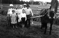 |
Familjen Forsell i Holmfors.
Bakre raden 1:a från vänster farmor Adele, 4.a fr.v. Ivar, 5:a fr.v. farfar Algot
|
| |
| 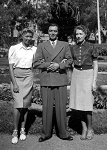 |
| 1941. Mabel Strömberg Brudell, Birger Forsell och Birgit Forsell f. Brudell poserar i stadsparken, Skellefteå. |
| |
| 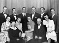 |
1945. Familjen Adéle och Algot Forsell.
Bakre raden fr.v.: Ivar, Birger, Ragnar,Torsten, Daniel, Harry
Främre raden fr.v.: Gunborg. Adele, Margit, Sanna, Algot, Magda.
|
| |
| 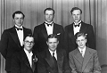 |
1945. Bröderna Forsell.
Bakre fr. v.: Birger, Ivar, Torsten
Främre fr. v.: Daniel, Ragnar, Harry
|
| |
| 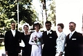 |
| 1969-07-19. Brudparet Kerstin Lennerstrand och Arne Forsell flankeras av föräldrarna Åke och Margareta Lennerstrand t.v. och Birgit och Birger Forsell t.h. utanför Bromma kyrka. |
| |
| 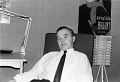 |
| 1969-09. Birger på besök hos Jan och Ulla-Stina, studentrummet Fysikgränd, Ålidhem, Umeå. |
| |
| 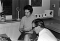 |
| 1969-09. Birgit och Birger på besök hos Ulla-Stina och Jan, studentrummet, Fysikgränd, Ålidhem, Umeå. |
| |
| 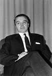 |
| 1969-12-24. Birger Forsell, vardagsrummet i Boliden. |
| |
 |
| 1969-12-24. Birgit, Ruth, Birger, Roger och Ulla-Stina avnjuter julbordet i Boliden. |
| |
| 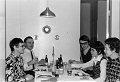 |
| 1969-12-24. Ruth, Birger, Jan, Ulla-Stina och Birgit avnjuter julbordet i Boliden. |
| |
| 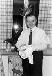 |
| 1969-12-24. En glad Birger i köket efter julmiddagen. |
| |
 |
| 1970-03-30. Birger och Jan på långpromenad förbi Bjurliden, Annandag Påsk. |
| |
| 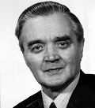 |
| 1979. Birger Forsell. |
| |
| 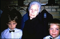 |
| 1986-10. David, mormor Birgit och Peter inför begravningsgudstjänsten för morfar Birger. |
| |
| 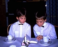 |
| 1986-10. Bröderna David 11 och Peter Fredman 9 vid minnesstunden efter begravningsgudstjänsten för morfar Birger Forsell. |
|


{kind=link}
{kind=link}
{kind=link}
{kind=link}
{kind=link}
{kind=link}
{kind=link}
{kind=link}
{kind=link}
{kind=link}
{kind=link}
{kind=link}
{kind=link}